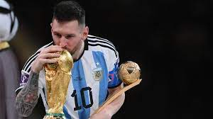
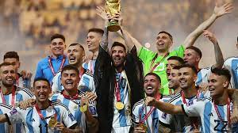
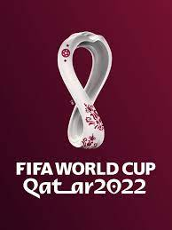

מונדיאל 2022

מארחת: קטאר
תקופת התחרות: 20 בנובמבר-18 בדצמבר 2022 (4 שבועות ויום)
מספר משתתפות: 32
הזוכה: ארגנטינה
מספר משחקים: 64
מלך השערים: קיליאן אמבפה
השחקן המצטיין: ליאונל מסי
מונדיאל 2022 היה טורניר גביע העולם בכדורגל לנבחרות גברים ה־22, שהתקיים בקטר בין 20 בנובמבר ל-18 בדצמבר 2022, התאריך שבו נערך משחק הגמר, בו זכתה ארגנטינה בגביע העולם במשחק הגמר מול צרפת. הטורניר הוא הראשון שמתקיים בעולם הערבי והשני בלבד שנערך באסיה, לאחר מונדיאל 2002 שהתקיים בקוריאה הדרומית וביפן. בנוסף, מונדיאל זה הוא המונדיאל האחרון בן 32 נבחרות, כאשר החל מהמונדיאל הבא (מונדיאל 2026 בארצות הברית, קנדה ומקסיקו) ישתתפו בטורניר 48 נבחרות. בשל האקלים החם בקטר, הטורניר נערך בחודשים נובמבר עד דצמבר, והוא הראשון שאינו מתקיים בחודשים מאי, יוני או יולי. המונדיאל נערך בפרק זמן מקוצר של 29 ימים, עם 64 משחקים בשמונה אצטדיונים בחמש ערים.
בגמר ניצחה ארגנטינה, אלופת דרום אמריקה, את צרפת, אלופת העולם המכהנת תום הארכה בדו-קרב פנדלים. במשחק על המקום השלישי ניצחה קרואטיה, סגנית האלופה המכהנת, את מרוקו. ליונל מסי נבחר למצטיין הטורניר וקיליאן אמבפה הוכתר כמלך השערים בטורניר.
הענקת אירוח המונדיאל לקטר שנויה במחלוקת בשל היחס למהגרי עבודה, לנשים ולקהילת הלהט"ב, האקלים החם, היעדר תרבות כדורגל בקטר, פגיעה בלוח הזמנים המסורתי, איסור על מכירת אלכוהול, האשמות בשוחד בעת המכרז והאשמות בשחיתות רחבה יותר של פיפ"א.
סקירה כללית
מונדיאל 2022 הוא המהדורה ה־22 של גביע העולם בכדורגל של פיפ"א, אליפות העולם בכדורגל לנבחרות גברים לאומיות.
הטורניר נערך לראשונה ב־1930 באורוגוואי, והוא מתקיים אחת לארבע שנים ובו משתתפות (החל ממהדורת 1998) 32 נבחרות לאומיות. הטורניר נפתח בשלב בתים בן שמונה בתים, ולאחר מכן שלב נוקאאוט בן ארבעה סבבים. האלופה המכהנת היא צרפת, שניצחה 4–2 את קרואטיה בגמר 2018.
האירוע התקיים בפורמט מקוצר מהרגיל בין 20 בנובמבר ל־18 בדצמבר 2022.

גמר המונדיאל
גמר מונדיאל 2022 היה המשחק האחרון במונדיאל 2022, ובו ניצחה נבחרת ארגנטינה את נבחרת צרפת והפכה לאלופת העולם. המשחק התקיים ב־18 בדצמבר 2022, היום הלאומי של קטר, באצטדיון האייקוני לוסייל שבקטר, לעיני 89 אלף צופים, ונשפט על ידי השופט הפולני סימון מרצ'יניאק.
ארגנטינה הבקיעה שני שערים במחצית הראשונה, אך שער שלישי של קיליאן אמבפה ושער שני של ליונל מסי כפו תיקו 3–3 בסיום ההארכה. ארגנטינה ניצחה 4–2 בדו-קרב פנדלים, בדרכה לזכייה השלישית בתולדותיה והראשונה מאז 1986. המשחק רווי התהפוכות זכה לשבחים ותואר כאחד ממשחקי הכדורגל הטובים בהיסטוריה, ואולי "גמר המונדיאל הגדול בכל הזמנים".
